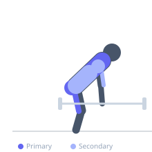
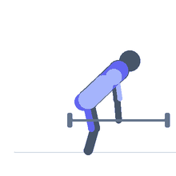

Exercise guide / Sumo Deadlift High Pull
Sumo Deadlift High Pull
The sumo deadlift high pull is a combination movement that begins with a wide-stance deadlift and transitions into an upright row as the bar passes the waist, pulling it up to chin height. It trains the posterior chain through the lower phase and the upper back and shoulders through the pull. The wide stance emphasizes the glutes and inner thighs more than a conventional stance, and the explosive transition between phases develops full-body power. It is a staple movement in CrossFit and functional fitness programming.
Primary muscles
gluteus maximus
hamstrings
trapezius upper
Secondary muscles
adductors
erector spinae
deltoid lateral
biceps
Stabilizers
transverse abdominis
quadriceps
Equipment
Standard Barbell
Optional
Kettlebell


Starting position
- Stand with feet wider than shoulder-width, toes turned out 30–45°. Barbell over mid-foot. Hinge at the hips and grip the bar with a shoulder-width overhand grip inside the legs.
Setup
- Set up like a sumo deadlift — wide stance, bar over mid-foot, hips above knees, chest up. Use a barbell or kettlebell.
Steps
- Step 1: Set up in a sumo deadlift position — wide stance, overhand grip shoulder-width inside the legs, hips high, chest up.
- Step 2: Drive through the floor to initiate the lift — extend the hips and knees simultaneously.
- Step 3: As the bar passes the knees and hips reach extension, use the momentum to pull the bar upward in a high pull — elbows flare out and rise above the bar.
- Step 4: Pull the bar up to chin height with elbows high and wide.
- Step 5: Lower the bar under control back to the starting position.
Coaching cues
- Push the floor away first — then pull
- Elbows high and wide at the top
- Keep the bar close — it should travel straight up
Breathing
- Inhale and brace before the pull. Exhale at the top or during the controlled descent.
Range of motion
- Full hip extension at mid-phase. Bar reaches chin height at the top.
Tempo
- Explosive pull phase; controlled lower.
Common mistakes
- Initiating the high pull too early — the hip extension phase must be completed first
- Pulling the bar too far from the body — keep it close throughout
- Rounding the lower back at the start
Safety
- Requires hip hinge and upright row proficiency before combining
- Use moderate loads — the explosive transition limits the weight appropriate for this movement
Training
- power: 3–8 reps
- hypertrophy: 8–12 reps
- endurance: 12–20 reps
- power: 3–5 sets
- hypertrophy: 3–4 sets
- endurance: 2–3 sets
- Rest: {'power': 180, 'hypertrophy': 90, 'endurance': 60}